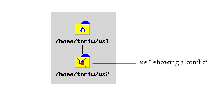
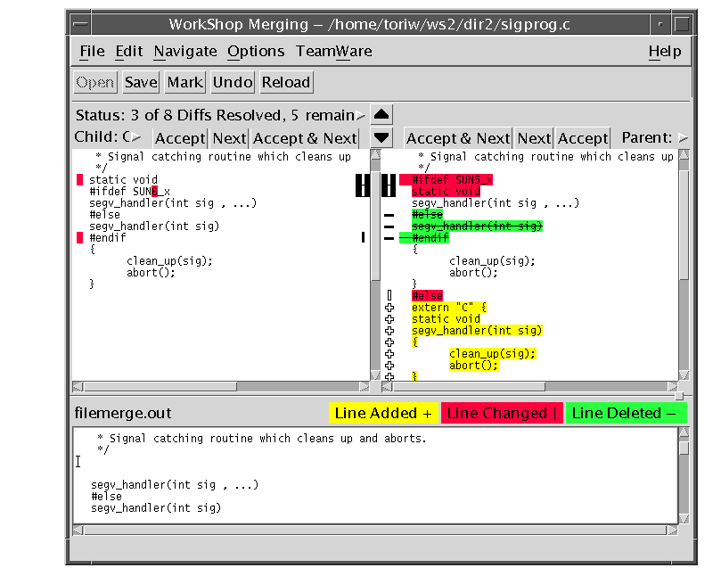
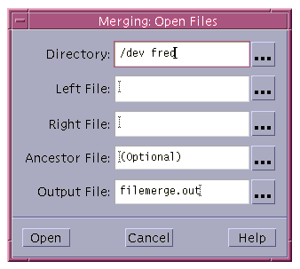
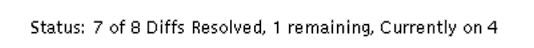
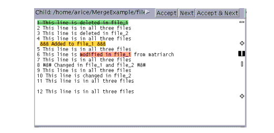
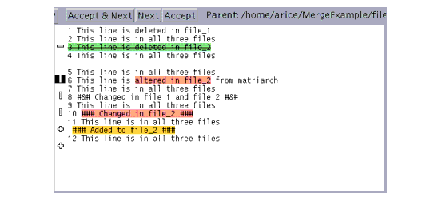

| Sun WorkShop TeamWare User's Guide |
Resolving Differences Between Files
When two copies of the same file have had changes made to them, these files are in conflict. When you try to put back a file that you have changed in your child workspace, but it has also been changed in the parent workspace, the Sun WorkShop TeamWare tools will prevent you from putting back the file until you have resolved the differences between them. Merging is the tool you use to resolve conflicts between files.
The chapter covers the following topics:
- Starting Merging
- Resolving Conflicts in a Workspace
- Viewing the Merging Window
- Resolving Differences
- Using Automatic Merging
- Undoing Changes
- Merging Options
- Merging Example
Starting Merging
In the Configuring window, a workspace with conflicts has an icon in which one of the files is red and red motion lines indicate a conflict. In FIGURE 6-1,
ws2has a file in conflict with its parent,ws1.
FIGURE 6-1 Workspace Conflict ExampleConflicts need not be resolved immediately. You can continue to make changes and create new deltas in conflicted files in the child workspace. New deltas are created on a branch; when you finally resolve the conflict, the latest delta is the one merged with the version brought over from the parent. Conflicts must be resolved before you can put back the files to the parent. If you attempt a putback and files are in conflict, Configuring will prompt you to perform a bringover and then display the conflicted files in the Resolve tab of the Transactions dialog box.
You can start Merging in two places:
- The Teamware menu
- The Resolve tab of the Transactions dialog box
Starting Merging From the TeamWare Menu
To start Merging, Choose TeamWare Merging in the main window of Configuring, Versioning, or Freezepointing.
Starting Merging From the Resolve Tab
The Resolve tab of the Transactions dialog box acts as intermediary between you and Merging. It lists conflicted files that are detected during Bringover Update transactions. The Resolve transaction allows you to select the conflicted file, and starts Merging with the conflicted files already loaded. Configuring automatically takes you to the Resolve tab of the Transactions dialog box if you chose to resolve a conflict during a putback. You can also open the Resolve tab by choosing Actions Resolve.
Viewing the Merging Window
When you start Merging, the Merging window appears (see FIGURE 6-2). The Merging window is divided into three panes: two side-by-side panes, which display different versions of the file, and the merged result in the bottom pane. The top two panes are read-only; the bottom pane contains selected lines from either or both versions of the file and can be edited to produce a final merged version.
Each delta in each of the top panes is shown in comparison to the common ancestor delta:
- The child delta is displayed in the left pane labeled Child
- The parent delta is displayed in the right pane labeled Parent
The common ancestor is the delta from which both the parent and child deltas are descended. This arrangement permits you to make a three-way comparison--each delta to the common ancestor and each delta to the other.
Resolving Conflicts in a Workspace
To resolve a conflict in a workspace:
1. In Configuring, double-click the icon of a conflicted workspace.
- The Resolve tab of the Transaction dialog box opens with the names of its conflicted files displayed in the File List pane.
2. Click Merge Conflicts.
- Resolve starts Merging and begins to process the list of files in the File List pane. For each file in the list, Configuring extracts the parent delta, the child delta, and the common ancestor from the SCCS history file and passes their path names to Merging. The Merging window opens with the files loaded and ready for merging.
3. Use Merging to resolve the differences between the parent and child versions of the file.
- See Resolving Differences for details about using Merging.
4. Once you have resolved conflicts, save the file.
- After you use Merging to resolve differences between the parent and child versions of the file, Configuring creates a new delta in the child SCCS history file. The new delta contains the merged result you created using Merging.
5. Repeat this process until all conflicts are resolved..
FIGURE 6-2 Merging WindowReading Merging Glyphs
To help you find differences more easily, Merging highlights lines that differ with color and glyphs. Yellow shows an addition, red shows a change, green shows a deletion.
The meaning of glyphs is different if you are comparing two versions with each other (two input files) or if you identify an ancestor for the two versions of the file (three input files). FIGURE 6-2 shows the Merging window with glyphs indicating differences between two files.
Two Input Files
When only two files have been loaded into Merging, lines in each file are marked by glyphs to indicate when they differ from corresponding lines in the other file:
- If two lines are identical, no glyph is displayed.
- If two lines are different, a vertical bar (|) is displayed next to the line in each input text pane, and the different characters are highlighted in yellow.
- If a line appears in one file but not in the other, a plus sign (+) is displayed next to the line in the file where it appears, and the different characters are highlighted in red.
- Resolved differences are marked by glyphs in outline font.
Three Input Files
When you load two files to be merged, you can also specify a third file, called the ancestor of the two files. An ancestor file is any earlier version of the two files. When you identify an ancestor file, it is used as a basis to compare the two files and automatic merging can be done. Merging marks all lines in the derived files or their descendants that differ from the ancestor and produces a merged file based on all three files.
- The lines in the files that are different from the ancestor file are marked with change bars and colors. Here's what each means:
- If a line is identical in all three files, no glyph is displayed.
- If a line is not in the ancestor but was added to one or both of the descendants, a plus sign (+) is displayed next to the line in the file where the line was added, and the different characters are highlighted in yellow.
- If a line is in the ancestor but has been changed in one or both of the descendants, a vertical bar (|) is displayed next to the line in the file where the line was changed, and the different characters are highlighted in red.
- If a line is present in the ancestor but was removed from one or both of the descendants, a minus sign (-) is displayed next to the line in the file from which the line was removed, and the different characters are highlighted in green and in strikethrough.
- Resolved differences are marked by glyphs in outline font.
Loading Files Into Merging
If files are not automatically loaded into Merging by Resolve, you can load files by choosing File Open or clicking the Open button. The Open Files dialog box is displayed (see FIGURE 6-3).

FIGURE 6-3 Merging: Open Files Dialog BoxTABLE 6-1 describes the text boxes in the Open Files dialog box.
In a loaded Merging window, the names of the left file, right file, and output file are displayed above the appropriate text panes. The name of the ancestor file (for a three-way diff only) is displayed in the window header.
Resolving Differences
While focusing on a difference, you can accept a line from either of the original deltas, or you can edit the merged version by hand. When you indicate that you are satisfied with your changes by clicking on a control panel button, the current difference is said to be resolved. After a difference is resolved, Merging changes the glyphs that mark the difference to outline (hollow) font. Merging then automatically advances to the next difference (if the Auto Advance property is on), or moves to another difference of your choice.
A difference is represented by a blank line in the merged (output) file in the lower text pane. To resolve a difference, you edit the line displayed by either:
- Accepting the line displayed and incorporating it into the merged file by clicking either the Accept or Accept & Next button over the pane you want to accept.
- Editing the line in the merged file by hand, and marking the difference as resolved by choosing Edit Mark Selected as Resolved.
If you want Merging to automatically put lines that are not in conflict (that is, the line has changed in one file but not in the other) into the merged file, you can select Options Auto Merge. Then when you start Merging, all the resolved lines are put in the merged file for you. For more information, see Using Automatic Merging.
To resolve differences between files:
1. Determine which difference you are dealing with:
- Read the Status Line on the upper left side of the Merging window.
- See which glyph is highlighted.
The difference on which Merging is focusing at any given time is called the current difference. The difference that appears immediately after in the file is called the next difference; the difference that appears immediately before in the file is called the previous difference.
2. Choose a version and accept it:
- To accept the child version of the line, click the Accept button above the file on the left.
- To accept the parent version of the conflicted line, click on the Accept button above the file on the right.
The version you accept will appear in the merged file in the bottom pane.
3. Click Next to go to the next conflict in the file.
If you do not want your changes and you want to start over, click the Reload button. This ignores all the conflicts that you have resolved and reloads the files.
4. Click Save when you have resolved all conflicts.Using Automatic Merging
If you have loaded a common ancestor file, Merging is often able to resolve differences automatically, based on the following rules:
- If a line has not been changed in either descendant (it is identical in all three files), it is placed in the merged file.
- If a line has been changed in only one of the descendants, the changed line is placed in the merged file. A change could be the addition or removal of an entire line, or an alteration to some part of a line.
- If identical changes have been made to a line in both descendants, the changed line is placed in the merged file.
- If a line has been changed differently in both descendant files so that it is different in all three files, Merging places no line in the merged file. You must resolve the difference--either by using a line from the right or left file, or by editing the merged file by hand.
- Resolved differences are marked by glyphs in outline font.
Automerging Rules Summary
TABLE 6-2 summarizes the automerging algorithm.
- Ancestor is the version of a text line that is in the ancestor file
- Change 1 is a change to that line in one of the descendants
- Change 2 is another change, different from Change 1.
- When a line is changed differently in the left and right descendants, automerging does not put either line in the merged file.
TABLE 6-2 Automerging Rules Summary Ancestor Ancestor Ancestor Change 1 Ancestor Change 1 Ancestor Change 2 Change 2 Change 1 Change 1 Change 1 Change 1 Change 2 No Automerge Undoing Changes
You can undo changes with the Edit Undo command.
You can also use the Reload button on the Merging window tool bar to ignore all edits that have been performed on the two files and reload them from disk. Any nonconflicting differences will be displayed in the bottom pane if the Auto Merge option is selected.
Merging Options
You can change the behavior of Resolve and Merging in two places:
- Resolve Options in Configuring
- Display Options in Merging
Resolve Options
The Resolve tab of the Tool Properties window (FIGURE 6-4) lets you change the behavior of the Resolve pane of the Transactions window. The specific properties are described in TABLE 6-3.
FIGURE 6-4 Tool Properties Dialog Box: Resolve Tab
Display Options in Merging
The Options menu in the Merging window contains the following components. The first five options on this menu are toggles, that is, you can turn them on and off by selecting them. A small box appears to the left of an option when it is on.
TABLE 6-4 lists the Merging Display options.
Merging Example
This example merges two files that have a common ancestor. The files are
file_1andfile_2, and the ancestor file is namedmatriarch. The descendant filesfile_1andfile_2were derived frommatriarchby editing. The edits show all varieties of changes that could occur in the descendants: deleting lines, adding new lines, and changing lines.The content of each line in the example helps to identify whether or not it was changed, and how. The ancestor file contains only twelve lines and is shown in CODE EXAMPLE 6-1.
Merging does not number lines in the files it loads; the numbers are part of the example text and were placed there for clarity.
CODE EXAMPLE 6-2 shows the contents of
file_1. This file is identical tomatriarchwith the following exceptions:
- The line numbered 1 in the
matriarchfile was deleted infile_1.- A new line was added following the line numbered 4.
- The line numbered 6 was changed (a different change was made to this line in
file_2).- The line numbered 8 in the
matriarchfile was changed (an identical change was made to this line infile_2).
CODE EXAMPLE 6-2 Descendant File ( file_1)
CODE EXAMPLE 6-3 shows the contents of
file_2. This file is identical tomatriarchwith the following exceptions:
- The line numbered 3 in the
matriarchfile was deleted.- The line numbered 6 was changed (a different change was made to this line in
file_1).- The line numbered 8 was changed (an identical change was made to this line in
file_1).- The line numbered 10 was changed (no change was made to this line in
file_1).- A new line was added following the line numbered 11.
CODE EXAMPLE 6-3 Descendant File ( file_2)
In the upper left of the Merging window, Merging has reported finding seven differences, of which only one remains unresolved (see FIGURE 6-5). Six differences were resolved by automerging and are marked by glyphs in outline font (see FIGURE 6-6 and FIGURE 6-7).

FIGURE 6-5 Merging Status offile_1andfile_2After Automerging 
FIGURE 6-6File_1Displayed in Child Pane After Automerging 
FIGURE 6-7File_2Displayed in Parent Pane After AutomergingThe meaning of the glyphs is as follows: a vertical bar means a change in the marked line, a plus sign signifies a line added, a minus sign means a line was deleted. Unresolved states are marked by solid glyphs, unresolved by outline. These glyphs are highlighted in color except when the color map is full. The default significance is: red indicates a change, green indicates a deletion, yellow shows an addition.
The unresolved difference (line 6) is marked by a vertical bar.
Examining Differences
Merging highlights the unresolved difference, which it identifies as the line numbered 6 in
file_1andfile_2. When differences are being resolved with Merging, the resulting Merging window (filemerge.out) shows the current state of the file with automatic merging.You can proceed to the next unresolved difference by clicking the down arrow above the appropriate file or choosing Navigate Next Difference. The next difference becomes the current difference.
You can proceed through the differences by clicking on the down arrow.
Automerging preserves a change that was made to one file if no change was made in the other file. When a difference has not been resolved by automerging, as indicated by the solid highlighted glyph next to the lines involved in the difference, you need to resolve the difference by making a choice. The vertical line indicates that the line has been changed (as opposed to added or deleted). Automerging does not include either line in the merged file because the same line was changed differently in the two files. You will have to determine which change to accept.
Resolving a Difference
You could resolve this difference in one of the following ways:
- Clicking the Accept or Accept & Next button on the left to place the line from
file_1into the output file- Clicking the Accept or Accept & Next button on the right to place the line from
file_2into the output file- Editing the output file by hand
Editing the Output File
1. Move the pointer into the output file's text pane and place it in the line you want to change.
- In this example, the following line was typed in:
>>> This line edited by hand <<<2. Choose Edit Mark Selected as Resolved.
- This menu item marks the difference as resolved. In this example there are no more unresolved differences, so the next difference remains the current one.
The message in the upper left part of the window now indicates that all differences have been resolved.
3. Verify the automerged differences.Navigate through the differences by clicking the down arrow.
The final difference results from a line that was added only to
file_2. Merging would place the new line in the output file, just as it did when a new line was added tofile_1, which resulted in the third difference.
|
Sun Microsystems, Inc. Copyright information. All rights reserved. Feedback |
Library | Contents | Previous | Next | Index |